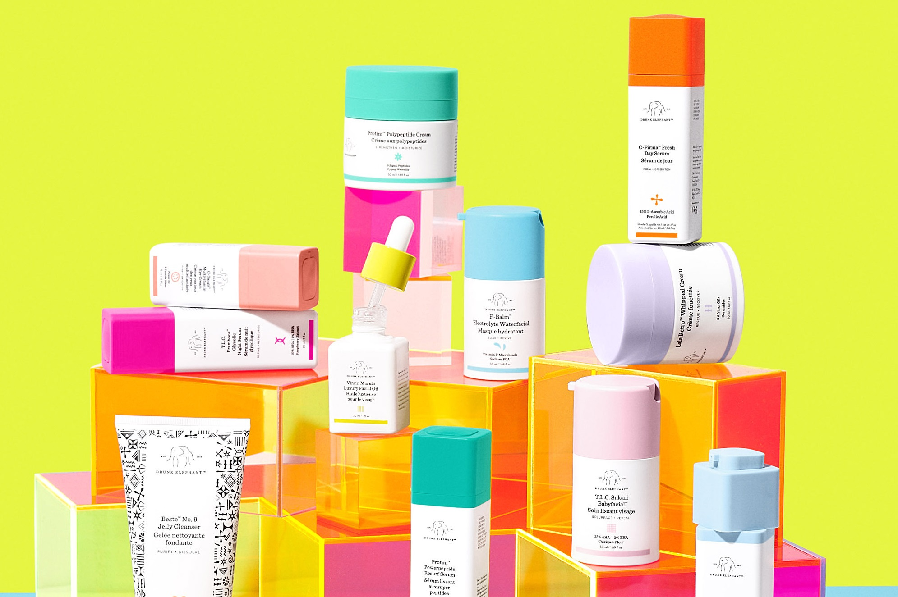
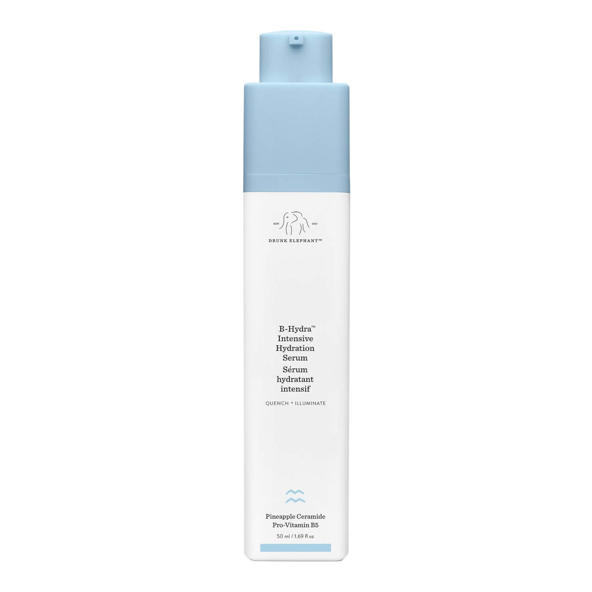
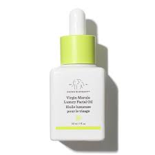
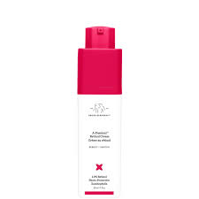

 Drunk Elephant is currently an incredibly popular skincare brand that has blown up on TikTok. The company is named after a commonly used item in their skincare called marula oil. There is a myth that when elephants drink the juice from the marula fruit, they supposedly act as though they are drunk. So there you have the name - Drunk Elephant! The brand is especially famous for their 'bronzi drops' which are a tinted serum and give your skin a blonzer glowy look without being too cakey. They are also well known for their 'skincare smoothies' which is where you take one of their moisturisers, these are cleverly designed to pump out product, and add in other serums. it is said that any of their serums are compatible with their moisturisers and teenagers are going crazy to make them. It is a very smart marketing pull and it is one of the reasons that this brand has gone viral. Tiffany Masterson, the brand creator, designed her products so that they did not include any of the 'suspicous six' in the formula. These six ingredients that she came up with are dangerous to the skin but for some reason are still found in some other brand's products.
Below is are links to where you can find more out about drunk elephant or purchase it. If you want more information you can access it via their own website but if you are looking to buy something from the UK, the Sephora website would be more helpful. You can find Drunk Elephant in SpaceNK shops in England, or if you are shopping from America, you can view Drunk Elephant in Ulta Beauty stores.
------------------------------------------------------------------------------------------------- -------------------------------------------------------------------------------------------------- -------------------------------------------------------------------------------------------------- --------------------------------------------------
Drunk Elephant B-Hydra Serum I recommend the Drunk Elephant B-Hydra Intensive Serum for younger skin because it is really just a hydrating juice! There are no harsh chemicals or retinols inside and it will give your skin a bouncy glow. It is a very good serum to try in a skincare smoothie with one of their moisturisers since it is a smooth gel and will cool or refresh your skin. It would normally cost £43 but prices can vary from websites, I definitely believe that this product is worth your money and is a staple in a skincare routine. The packaging is similar to the rest of the Drunk Elephant line, mainly white with a different colour lid. A good marketing pull on this item is the satisfying click-twist top - to open the product you spin the top round and a pump will emerge, alowing you to squeeze the serum out. This is the same as the Drunk Elephant eye balms and other serums such as the C-Firma Fresh Day Serum and T.L.C Framboos Glycolic Night Serum. This product will benefit you if you:
------------------------------------------------------------------------------------------------- -------------------------------------------------------------------------------------------------- -------------------------------------------------------------------------------------------------- --------------------------------------------------
Drunk Elephant Virgin Marula Oil This Drunk Elephant Virgin Marula Oil is pricey for it's size but it is a very underestimated product. It is mainly white but has a bright lime yellow lip with an attached pipete to release the oil into your hand or onto a moisturiser for a skincare smoothie! Yes that's right, it is also compatible with their Protini Polypeptide Cream, La La Retro Moisturiser and even their new Bora Barrier Repair Cream! It is able to purchse in a 15ml size for £35 or a £0ml size for £64. It is probably worth trying out the smaller size first to test to see if it works for your skin before spending a larger amount on a bigger portion but this oil is suitable for many different types of skin so hopefully it will do the job. Many people associate this oil with their other retinol oil and say that you shouldn't use the Virgin Marula Oil, however this oil is actually ok for young skin just do not use an excessive amount of it. This product will be helpful for your skin if you have:
------------------------------------------------------------------------------------------------- -------------------------------------------------------------------------------------------------- -------------------------------------------------------------------------------------------------- --------------------------------------------------
 This Drunk Elephant Retinol Serum is definitely not suitable for young skin that has not yet matured since the key ingredient is retinol and that is meant for reversing or preventing looks of aging skin. There have been a lot of videos recently about children going into shops like SpaceNK and Sephora and asking for the retinol since they believe it is cool and the brand is trending. However, it has now become a trend that people film these 'ten year old girls' in the shop and post it on a social media platform with nasty comments. Children do not realise how this can be damaging for their skin in the long run and awareness needs to be raised about this particular ingredient not being appropriate for young skin. They believe that they are helping their skin but they are really just adding thick layers of chemicals onto their face. If you hear a friend talking about purchasing any item with retinol in it, but specifically one of the Drunk Elephant items, warn them against it and read the ingredients in your own skincare products before aplying them. Please only use retinol on your face if you:
------------------------------------------------------------------------------------------------- -------------------------------------------------------------------------------------------------- -------------------------------------------------------------------------------------------------- --------------------------------------------------
------------------------------------------------------------------------------------------------- -------------------------------------------------------------------------------------------------- -------------------------------------------------------------------------------------------------- --------------------------------------------------
Click back here to return to the home page and read more blogs on many different topics!